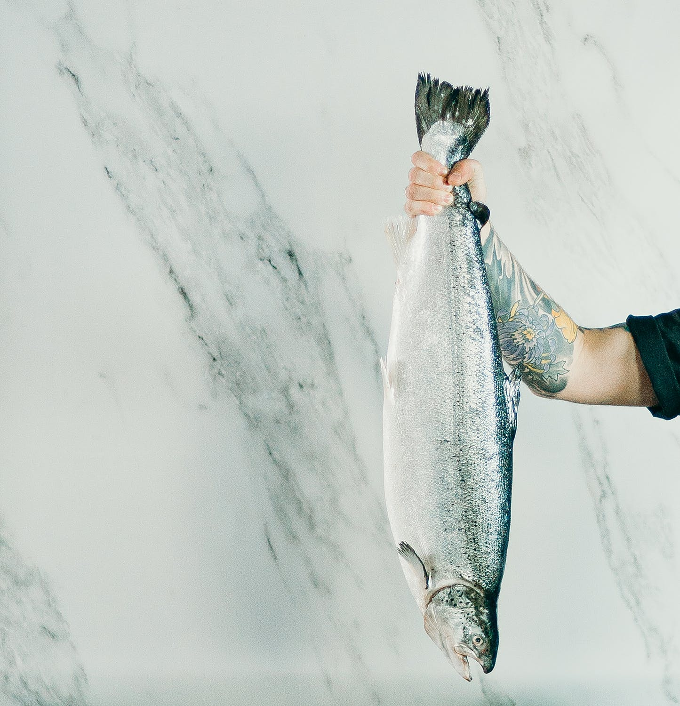

Since 2007, Poseidon's Treat has been the go-to spot for the freshest catch of the day. Originally opened by Saul T. Cracks, with the mission to provide nothing but the best for those looking for fresh, locally caught seafood. Since 2019, Poseidon's Treat has been under new management by Saul's son Jimmy. The still family run business continues with Saul's original vision in mind.
